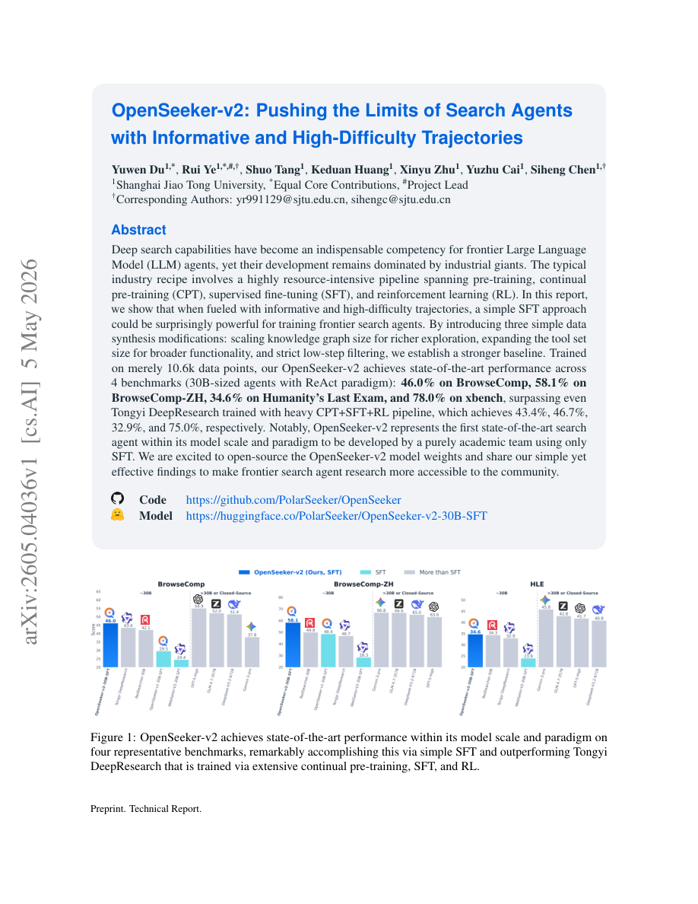

#1
★ 8/10
OpenSeeker-v2: Pushing the Limits of Search Agents with Informative and High-Difficulty Trajectories
OpenSeeker-v2：用高信息量、高难度轨迹突破搜索智能体的能力上限

图 Figure · Page 1 of paper
🎯 仅用1万条高质量轨迹做SFT，超越工业级重训练流水线搜索智能体
SFT on 10.6k high-quality trajectories beats industry CPT+SFT+RL pipelines on frontier search benchmarks.
| 维度 | 中文 | English |
|---|---|---|
| ❓ 待解决 的问题 |
训练顶尖的大语言模型搜索智能体一直被工业界把持，需要经历预训练、持续预训练（CPT）、监督微调（SFT）和强化学习（RL）等极其耗费资源的流程。学术团队由于算力和数据资源不足，难以与之竞争，导致前沿搜索智能体研究对开放社区几乎不可及。 | Training state-of-the-art LLM search agents has been dominated by industry players using extremely resource-heavy pipelines that combine pre-training, continual pre-training (CPT), supervised fine-tuning (SFT), and reinforcement learning (RL). Academic teams lack the compute and data resources to compete, making frontier search agent research largely inaccessible to the open community. |
| 💡 解决 的亮点 |
• 仅用SFT即可媲美甚至超越工业界CPT+SFT+RL重型流水线，证明高质量数据比复杂训练流程更关键。 • 提出三项数据合成改进：①扩大知识图谱规模以增加探索多样性；②扩展工具集以覆盖更广功能；③严格的低步骤过滤，仅保留高难度、高信息量轨迹。 • 首个由纯学术团队基于SFT打造、在30B规模下达到SOTA的搜索智能体，并完全开源模型权重。 | • Demonstrates that a simple SFT-only approach, when powered by high-quality data, can match or exceed complex CPT+SFT+RL industrial pipelines — a surprising and practically important finding. • Introduces three targeted data synthesis modifications: (1) scaling knowledge graph size for richer exploration diversity, (2) expanding the tool set for broader functional coverage, and (3) strict low-step filtering to retain only high-difficulty, informative trajectories. • First state-of-the-art search agent at the 30B-model scale developed entirely by an academic team using only SFT, with full open-source release of model weights. |
| 🧪 实验 内容 |
在四个挑战性基准上评估模型的深度搜索和复杂推理能力：BrowseComp（英文）、BrowseComp-ZH（中文）、Humanity's Last Exam（HLE）和xbench。基线包括通义DeepResearch等工业界强模型（采用CPT+SFT+RL训练），以及同等30B规模的ReAct范式智能体，所有对比均在相同模型规模和范式下进行，确保公平性。 | The model was evaluated on four challenging benchmarks targeting deep search and complex reasoning: BrowseComp (English), BrowseComp-ZH (Chinese), Humanity's Last Exam (HLE), and xbench. Baselines include strong industrial systems such as Tongyi DeepResearch (trained with CPT+SFT+RL), as well as other 30B-scale ReAct-paradigm agents. All comparisons are performed at the same model scale (30B) and under the same ReAct paradigm to ensure fair comparison. |
| 📊 实验 结果 |
OpenSeeker-v2在全部4个基准上均达到30B规模ReAct智能体的SOTA：BrowseComp 46.0%（超通义DeepResearch的43.4%，高2.6个百分点）、BrowseComp-ZH 58.1%（超通义46.7%，高11.4个百分点）、Humanity's Last Exam 34.6%（超通义32.9%，高1.7个百分点）、xbench 78.0%（超通义75.0%，高3.0个百分点）。全部成果仅用1.06万条训练数据、不依赖CPT和RL实现。 | OpenSeeker-v2 achieves SOTA across all 4 benchmarks among 30B-scale ReAct agents: 46.0% on BrowseComp (+2.6pp over Tongyi DeepResearch's 43.4%), 58.1% on BrowseComp-ZH (+11.4pp over Tongyi's 46.7%), 34.6% on Humanity's Last Exam (+1.7pp over Tongyi's 32.9%), and 78.0% on xbench (+3.0pp over Tongyi's 75.0%). All this is achieved with only 10.6k training examples and no CPT or RL. |
| 🏁 结论 | OpenSeeker-v2证明，通过精心设计的高信息量、高难度轨迹数据合成，仅用1.06万条样本进行SFT，即可在前沿搜索基准上超越工业界CPT+SFT+RL重型流水线，使学术团队也能开展顶级搜索智能体研究。 | OpenSeeker-v2 proves that a carefully designed SFT pipeline with informative and high-difficulty trajectories — using just 10.6k examples — can surpass industrial CPT+SFT+RL pipelines on frontier search benchmarks, democratizing access to state-of-the-art search agent research for academic teams. |
| 🔗 论文 链接 |
arXiv: 2605.04036v1 · 📥 PDF | |
⚙️ Method · 方法详解
作者构建了一套数据合成流水线，无需昂贵的RL或持续预训练即可生成高质量、高难度的搜索轨迹。首先，扩大知识图谱规模，创造更复杂多样的推理环境；其次，扩展可用工具集，让模型学习更丰富的动作空间；最后，应用严格的低步骤过滤，丢弃过于简单的轨迹，只保留具有挑战性和信息量的样本。最终用筛选出的1.06万条训练数据，在ReAct范式下对30B参数基础模型进行标准SFT微调。
The authors build a data synthesis pipeline that generates high-quality, high-difficulty search trajectories without requiring expensive RL or continual pre-training. First, they scale up knowledge graphs to create more complex and diverse reasoning environments. Second, they expand the available tool set so the agent learns to use a richer action space. Third, they apply strict low-step filtering — discarding trajectories that are solved too easily — ensuring only challenging, informative examples survive for training. The resulting 10.6k training examples are then used to fine-tune a 30B-parameter base model via standard SFT under the ReAct paradigm.
🌟 Why It Matters · 为什么重要
本文从根本上挑战了"前沿AI智能体训练必须依赖工业级算力和复杂多阶段流水线"的假设，证明数据质量可以弥补流程复杂度的不足。通过开源模型权重和方法，大幅降低了学术研究者参与和推进搜索智能体研究的门槛。
This paper fundamentally challenges the assumption that frontier AI agent training requires massive industrial compute and complex multi-stage pipelines, showing data quality can compensate for pipeline complexity. By open-sourcing both the model weights and methodology, it significantly lowers the barrier for academic researchers to contribute to and advance search agent development.